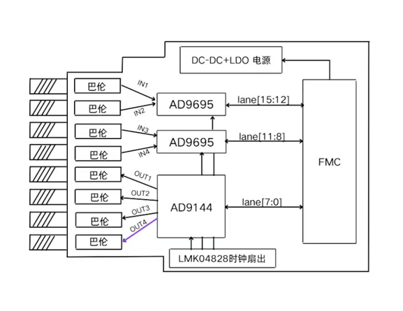

模拟输入
外部中频信号进入 AD 采集通道，经前端处理后送入高速 ADC。
总体架构
本页展示高速采集子卡的整体设计思路：板卡侧完成 AD/DA 转换、时钟分配和高速接口连接，FPGA 侧完成配置控制、数据收发和状态验证。
Board Architecture
ADDA 子板承担模拟输入、模拟输出、采样时钟和高速串行接口等任务；FPGA 主板承担芯片配置、数据接收、数据发送和状态监测。 板卡结构围绕“转换芯片、时钟系统、控制链路、数据链路”展开。

外部中频信号进入 AD 采集通道，经前端处理后送入高速 ADC。
FPGA 发送的数字数据经高速 DAC 转换为模拟波形输出。
低抖动时钟为 ADC、DAC 和 JESD 链路提供统一的采样与同步基础。
高速采样数据和寄存器配置分开传输，数据通道与控制通道各司其职。
System Workflow
系统工作流程以 FPGA 为核心展开：先建立稳定时钟，再配置各个芯片，随后同步高速链路，最终完成采集、输出和回环验证。 该流程体现的是板级系统的启动顺序和功能分层。
系统进入初始状态，等待主时钟和板级电源稳定。
时钟芯片输出采样时钟、器件时钟和同步参考信号。
FPGA 通过 SPI 配置时钟、ADC 和 DAC 的工作模式。
ADC/DAC 与 FPGA 之间建立 JESD204B 高速串行通道。
ADC 数据进入 FPGA，DAC 接收数据并生成模拟输出。
通过读回、状态信号和回环链路判断系统是否正常工作。